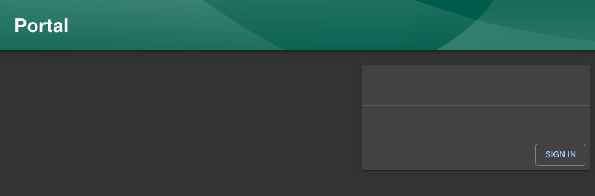
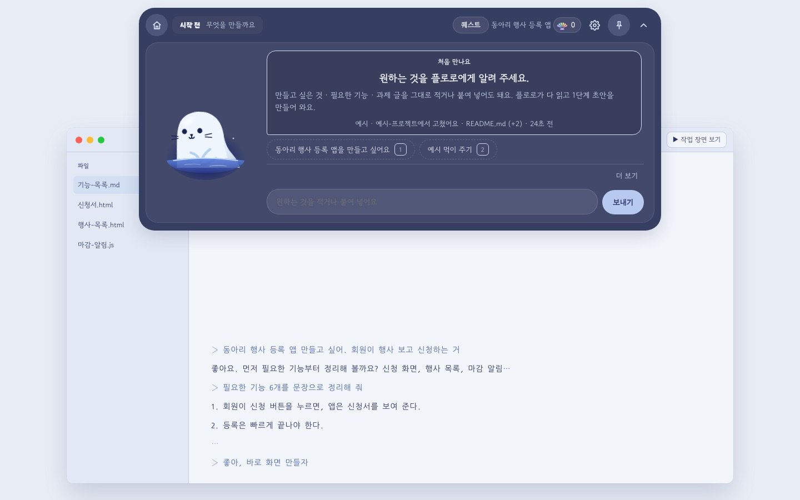
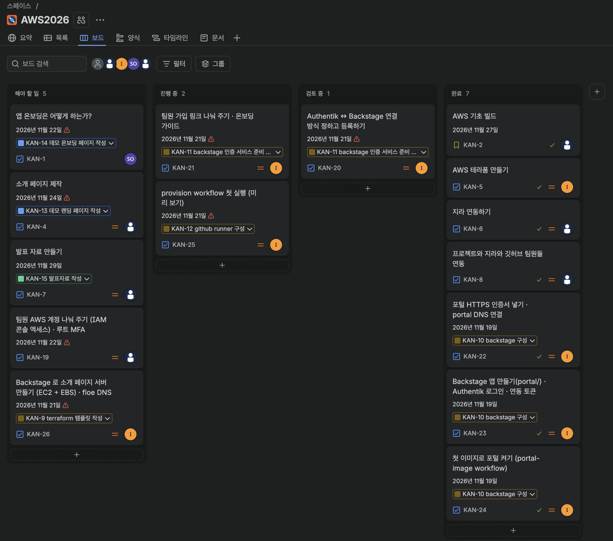

클라우드 컴퓨팅 팀별 과제 · 3조
Floe 데모를
코드로 배포하다
Terraform · GitHub Actions · Backstage로 만든 AWS 배포 파이프라인
이재엽(PM · 발표) · 송해광 · 오성준 · 김주경 · 박민혁
발표 2026-12-02(수)

평가표 일곱 칸을 차례대로 보여 드립니다
| 평가 항목 | 배점 | 슬라이드 |
|---|---|---|
| 1. 프로젝트 개요 — 선정 배경 · 개발 목표 | 5 | 3 – 4 |
| 2. 전체 시스템 구성도 — 목표 시스템 · 서비스 흐름 · 기술 SPEC | 10 | 5 – 8 |
| 3. 개발 S/W · DBMS · AI 활용 · AWS 클라우드 배포 | 20 | 9 – 14 |
| 4. 개발 소스 제출 · 개발 완성도 | 20 | 15 |
| 5. 발표 장표 · 기능 설명 · 시연 | 25 | 16 – 17 |
| 6. 팀별 역할 — 업무 배분 · 참여도 | 10 | 18 |
| 7. 가점 — Jira 협업 · GitHub · CI/CD · 교훈 | 10 | 19 – 22 |
콘솔에서 손으로 만든 서버는 기록이 남지 않는다
목표 다섯 명이 같은 AWS를 안전하게 나눠 쓰는 배포 길을 만든다
배포 대상은 Floe 데모, 목표는 세 가지

공개 주소 하나
누구나 여는 HTTPS 주소 · S3 + CloudFront
인프라 전부 코드로
Terraform 파일 21개 · AWS 자원 44개 정의
팀원은 양식만 채운다
Backstage 포털 → GitHub Actions
→ Systems Manager
교수님 예시 구조와 우리 구성을 한 칸씩 맞췄다
| 예시 아키텍처 | 우리 구성 | 상태 · 이유 |
|---|---|---|
| Route 53 (DNS) | Cloudflare DNS + 기본 cloudfront.net 주소 | 사용 — 팀 도메인을 이미 Cloudflare에서 관리 |
| CloudFront + S3 | CloudFront + S3 보관소의 site/ 칸 | 운영 중 — 11/17 첫 배포 |
| ELB (고가용성) | 쓰지 않음 | 정적 사이트 + EC2 1대 조건이라 나눌 대상이 없음 |
| EC2 (VM) | 포털 서버 EC2 (t3.small) · 소개 페이지 EC2 (t3.micro) + EBS | 포털 서버 켜짐 · 소개 서버는 plan 검증까지 |
| RDS (Database) | 쓰지 않음 — Terraform 상태는 S3 state/ | 데모가 가상 데이터만 써서 저장할 사용자 데이터가 없음 |
| (예시에 없음) | IAM OIDC · Systems Manager · ECR · Budgets | 키 없는 배포 · SSH 없는 관리 · 예산 알림 |
전체 구성도 — 보는 길과 만드는 길
주문에서 서버까지, 여섯 단계
인프라 만들기 — Backstage 주문
- 1템플릿 원본설계도 원본 커밋
PR마다 자동 검사 - 2포털 양식이름 · 주소
크기 · 디스크
plan / apply - 3설계도 PRdeployments/
<이름> 폴더
기록이 남는다 - 4GitHub runnerfmt · validate
OIDC 로그인
S3 bundles/ - 5Systems Manager포털 서버에서
terraform 실행 - 6EC2 + EBS사이트 받기
Cloudflare 주소
사이트 고치기 — 이미 운영 중인 길
- main에 push
- scripts/deploy.sh
- S3 site/ 동기화
- CloudFront
캐시 비움 - 공개 주소에 반영
deploy.sh는 main 최신 커밋에서만 돌고, 끝나면 docs/deploy-log.md에 한 줄을 남긴다
활용 기술 SPEC
| 구분 | 기술 · 버전 | 쓰임 |
|---|---|---|
| IaC | Terraform 1.11.4 · AWS provider 5.x | 21개 .tf 파일, 자원 44개 |
| CI/CD | GitHub Actions — checkout v5 · setup-terraform v4 · configure-aws-credentials v6 | 검사 · 프로비저닝 · 포털 이미지 |
| 포털 · 로그인 | Backstage · Authentik (GitHub + TOTP) · GitHub App | 인프라 주문 양식 |
| AWS | S3 · CloudFront · EC2 · EBS gp3 · SSM · IAM OIDC · ECR · Budgets | 서울 리전 |
| DNS · 인증서 | Cloudflare DNS · Cloudflare Origin CA | 팀 도메인 HTTPS |
| 웹 | HTML · CSS · JavaScript (프레임워크 없음) · Node.js 스크립트 | site/ 파일 81개 |
| 협업 | Jira (KAN) · GitHub 이슈 · 서로 링크 (KAN-6 · KAN-8) | 할 일 ↔ 코드 연결 |
| AI | Claude Code (코딩 에이전트) | 설계도 · 문서 초안, 검토 |
DB 대신, 상태는 S3가 기억한다
쓴 언어
HCL Terraform 설계도 21개 파일
Bash 서버 시작 스크립트 · deploy.sh
YAML workflow 3개 · Backstage 템플릿
HTML · CSS · JS site/ 81개 파일
Node.js serve.mjs — 내 컴퓨터에서 보기
DBMS를 쓰지 않은 이유
대신 기억해야 할 것 = 인프라 상태
| S3 칸 | 누가 쓰나 | 누가 읽나 |
|---|---|---|
| site/ | deploy.sh | CloudFront · 소개 서버 |
| bundles/ | GitHub runner | SSM (포털 서버) |
| state/ | terraform | terraform (잠금) |
AI는 만드는 과정에 썼다 — 데모 안에는 없다
Claude Code (에이전트)가 한 일
AI 활용 종류
| 종류 | 이 과제에서 |
|---|---|
| Agent | Claude Code — 파일 · git · gh 실행 |
| AI API | 웹 데모는 부르지 않음 (본 앱만) |
| RAG | 쓰지 않음 |
AI는 plan · 검사까지.
Terraform을 네 묶음으로 나눴다
infra/보관소 · CDN· S3 보관소 (칸 셋)· 암호화 · 버전 관리
· CloudFront · OAC
· 폴더 주소 함수자원 11apply: 배포 담당 · 11/17
infra/platform/플랫폼· 포털 서버 EC2· GitHub OIDC 역할
· SSM 문서 3개
· ECR · 서버 역할자원 19apply: 배포 담당 · 11/17
infra/account/계정· IAM 그룹 3개· 팀원 사용자 5명
· MFA · 내 키 관리
· 예산 알림 $40자원 9apply: 계정 주인 · 11/17
templates/floe-site/배포 설계도· EC2 · EBS· 고정 IP · 보안 그룹
· 디스크 붙이기
· Backstage가 값 채움자원 5Backstage → SSM · plan 검증
상태 파일 비공개 상태 버킷 + 잠금 · 배포별은 보관소 state/<이름>/
커밋 안 함 *.tfstate · backend.tf · 값이 든 *.tfvars → *.tfvars.example만 올린다
처음 한 번은 명령어, 그다음은 버튼
# 1) 보관소 · CDN
cd infra
terraform init
terraform plan
terraform apply
# 2) 플랫폼 — 포털 서버 · OIDC · SSM
cd infra/platform
terraform init
terraform plan -var "site_bucket_name=…"
terraform apply -var "site_bucket_name=…"
# 3) 사이트 올리기
scripts/deploy.sh
# 4) 주소 확인
terraform -chdir=infra output -raw site_url그다음은 GitHub Actions
오래 가는 키도, SSH도 없다
GitHub runner는 실행할 때만
AWS 역할을 1시간 이하로 빌린다.
서버 문은 Cloudflare를 거친 443 하나.
명령은 SSM 문서 3개로만.
버킷은 공개 차단.
CloudFront만 site/ 칸을 읽는다.
배포 담당 / 사이트 올리기 / 공통(MFA)
세 그룹으로 권한을 나눴다.
팀원은 포털에서 양식만 채운다

가입 · 로그인 (Authentik)
- 일회용 링크
- GitHub 로그인
- TOTP 등록
- 관리자 승인
연동은 GitHub App 하나 — 이 저장소만 다룬다. 팀원에게 AWS 계정이 없어도 배포할 수 있다.
만들기 › Floe 소개 페이지 서버
로그인 화면은 2026-11-25에 접속해 찍었다 · 로그인 서버 이름 · 주소는 공개 저장소라 가렸다
저장소 지도와 완성도
- infra/
- 보관소 · CDN
- infra/platform/
- 포털 서버 · OIDC · SSM
- infra/account/
- IAM · 예산
- templates/
- Backstage 설계도
- .github/workflows/
- CI/CD 3개
- site/
- 데모 · 소개 페이지
- scripts/
- serve · deploy
- docs/
- 절차 · 기록 · 온보딩
운영 중
- 공개 주소 3화면 — 11/25 응답 200
- Backstage 로그인 — 11/25 응답 200
- terraform-check — 4번 중 4번 통과
적용 · 검증
- AWS 3묶음 apply — 11/17
- 템플릿 plan: 자원 5개 추가 — 11/17
- 포털 EC2 — SSM Online
남은 것 (12/01 동결 전)
- provision 첫 성공 (11/25 OIDC 실패)
- 소개 페이지 EC2 + EBS apply
- 소스 zip = 태그 presentation-2026-12-02
시연 1 — 공개 주소에서 바로 열린다
https://d2ai5qb4183u6q.cloudfront.net


- 주소 열기
- 소개 페이지
- 연습 데모 3분
- 휴대폰에서도
시연 2 — 포털 주문이 서버가 되기까지
1 템플릿 고르기 → 2 미리 보기(plan)
→ 3 설계도 PR → 4 Actions 요약
→ 5 plan 결과
실제 실행 기록
11/17 템플릿 plan 시험 (SSM)
floe-demo-terraform → plan+ EC2 · EBS · 고정 IP
+ 보안 그룹 · 디스크 붙이기
결과: 5개 추가, 오류 없음
11/25 provision 첫 실행 (Actions)
✓ 입력 확인✓ fmt · validate
✗ AWS 역할 빌리기 (OIDC) — 거부
→ 22장: 원인 찾는 중, 발표 전 다시
녹화본은 리허설 뒤에 넣습니다 · 라이브는 서버를 실제로 만들어 비용 · 시간이 들어 녹화본으로 한다미리 찍어 둔 녹화본입니다 · 기다리는 시간은 잘라 냈습니다
다섯 명이 나눠 맡았다
| 이름 | 역할 | Jira 담당 일감 | 한 일 · 산출물 |
|---|---|---|---|
| 이재엽 | PM · 발표 · AWS 바탕 | KAN-2 · 6 · 7 · 8 · 15 · 17 · 19 | AWS 3묶음 apply · Jira 연동 · 문서 · 발표 자료 |
| 송해광 | 배포 파이프라인 · Terraform · Backstage | KAN-5 · 9 · 10 · 11 · 12 · 18 · 20~26 | Backstage + Authentik 포털 개통 (11/20) · 계정 승인 · 인증서 · DNS |
| 오성준 | 실제 인프라 배포 | KAN-1 · 14 | 온보딩 방식 정리 · 데모 온보딩 페이지 |
| 김주경 | 데모 페이지 | KAN-16 | 데모 페이지 · 발표 대본 |
| 박민혁 | 랜딩 페이지 | KAN-4 · 13 | 소개 · 랜딩 페이지 |
담당 · 마감 · 상태는 Jira가 원천 — GitHub 이슈 #20이 다섯 명의 일을 한 장에 비춘다
할 일의 원천은 Jira 보드 하나

일감 25개 = 에픽 10 + 작업 15
보드 위 작업 15개 기준 · 에픽 10개는 진행 3 · 완료 1 · 해야 할 일 6
담당 25개 — 사람별
- 송해광
- 13
- 이재엽
- 7
- 박민혁
- 2
- 오성준
- 2
- 김주경
- 1
Jira 일감 하나가 배포까지 가는 길
실제 예 KAN-10 포털 주소 고침
브랜치 KAN-10-portal-hostname → PR #24 → terraform-check ✓ (PR · main 2번) → 병합 11/18
숫자로 본 협업 (11/10 ~ 11/25)
- 커밋 (main)
- 25
- GitHub 이슈
- 20
- 병합한 PR
- 7
- Actions 실행
- 5
2026-11-25 기준 · gh pr list · gh issue list · gh run list · git log origin/main(병합 커밋 제외) · Jira 보드
막혔던 곳 넷, 그리고 배운 것
| 문제 | 원인 | 한 일 | 배운 것 |
|---|---|---|---|
| 배포가 설계도 · 상태를 지울 위험 | 버킷 맨 위를 sync --delete | site/ · bundles/ · state/ 칸 나눔, CloudFront는 site/만 | 저장 공간도 칸을 설계한다 |
| 포털 주소 오타 (potal) | 문서 · 설정 · 기본값 여러 곳 | PR #24 한 번에, CI 통과 뒤 병합 | 같은 값은 한 곳에서 |
| provision 첫 실행 실패 (11/25) | OIDC 역할 빌리기 거부 | 신뢰 조건 · Secrets의 역할 · 계정 대조 중 | 첫 실행은 plan으로, 로그로 지점 찾기 |
| nginx 보안 취약점 공개 (11/18) | 포털 서버 nginx 1.30.6 | 1.30.7 이상으로 올리기로 함 | 서버를 띄우면 패치 책임도 생긴다 |